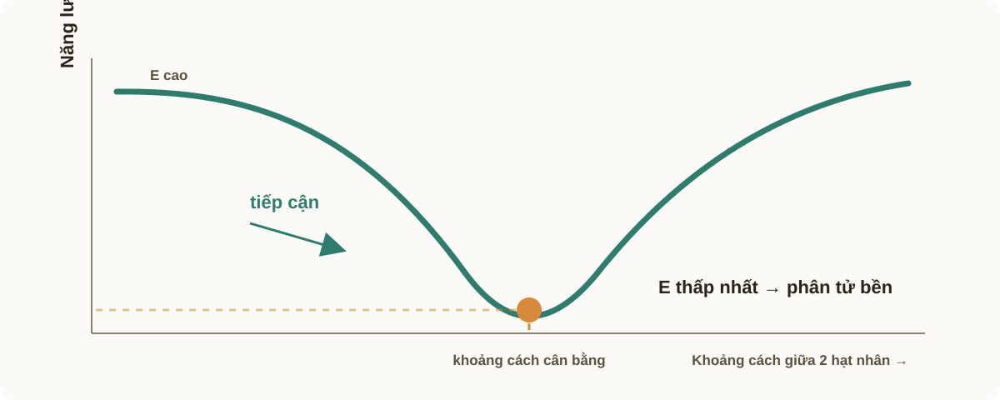
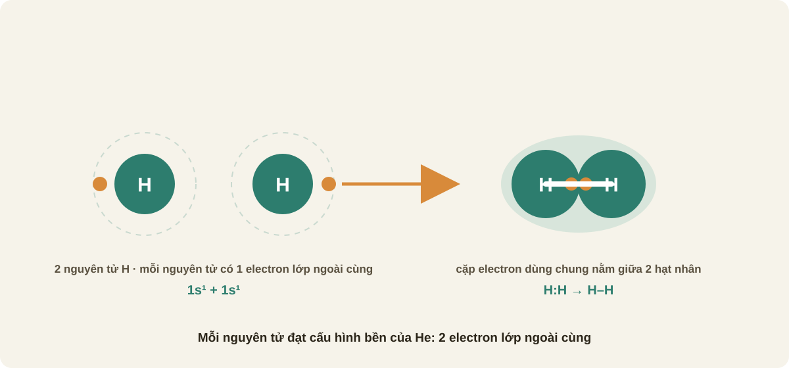
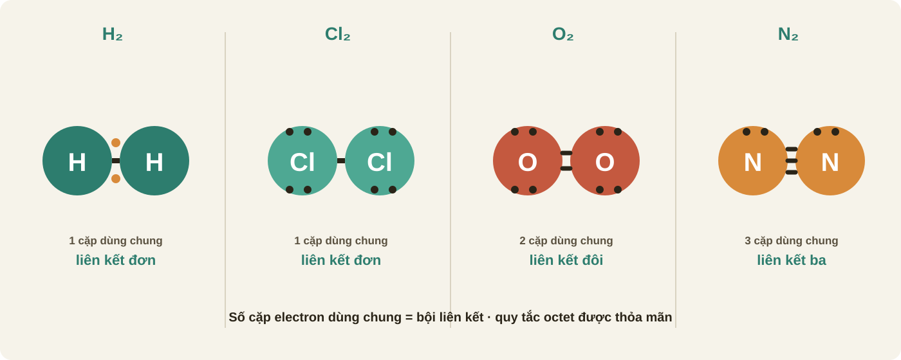
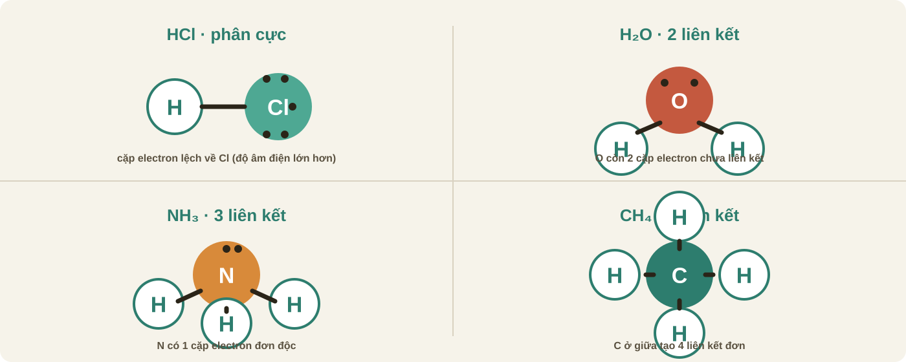
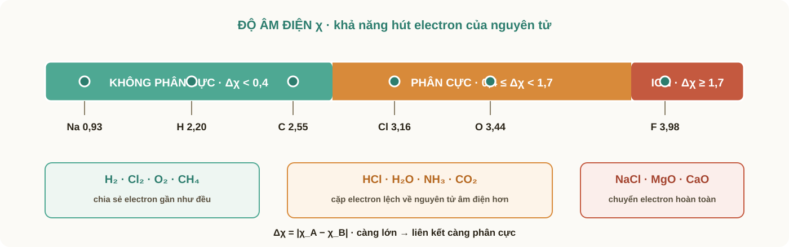
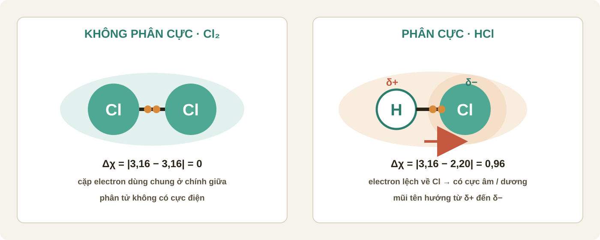
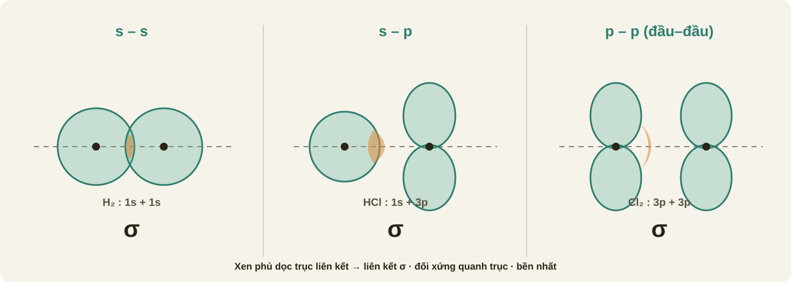
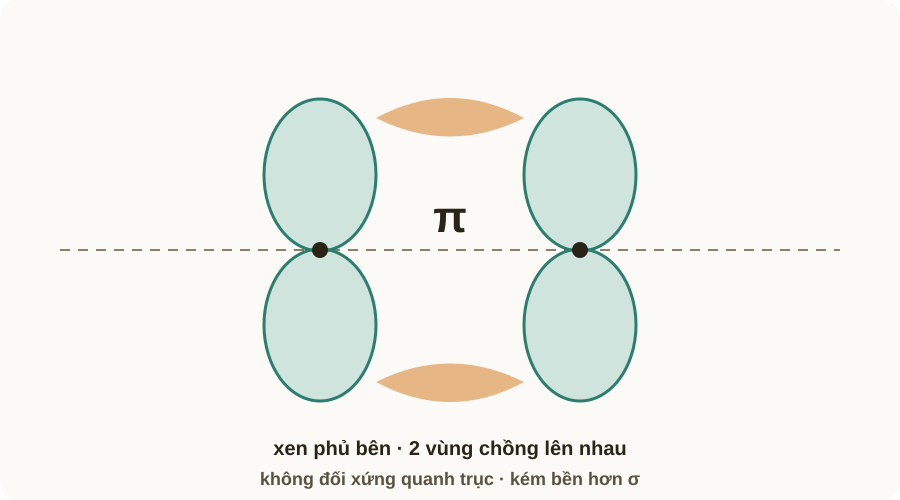

Từ cặp electron dùng chung đến độ bền của phân tử — khám phá cách các nguyên tử phi kim kết hợp với nhau.
10 trang · trực quanĐộ âm điệnXen phủ orbitalNăng lượng liên kết

Mở đầu: đặt câu hỏi “Tại sao hai nguyên tử hydro lại đứng cùng nhau thành H₂ thay vì tồn tại riêng lẻ?” Dẫn dắt: mỗi nguyên tử muốn đạt cấu hình khí hiếm, và cách làm của phi kim là chia sẻ electron. Trang này chỉ tạo tò mò, không vội đưa định nghĩa. Hình phân tử nước ở bên phải sẽ xuyên suốt bài: O chia sẻ electron với 2 H. Nhấn mạnh 4 nội dung sẽ học: hình thành liên kết, độ âm điện, xen phủ orbital, năng lượng liên kết.
MỤC TIÊU
Sau bài học này, em sẽ làm được gì?
1
Giải thích được sự hình thànhliên kết bằng cặp electron dùng chung
2
Phân loại được liên kếtdựa vào hiệu độ âm điện Δχ
3
Mô tả được xen phủphân biệt liên kết σ và π
4
So sánh được độ bềnthông qua năng lượng liên kết
Trọng tâm: hiểu rằng “dùng chung electron” không phải là “cho – nhận hoàn toàn”. Đây là ranh giới giữa liên kết cộng hóa trị và liên kết ion.
H₂ · Cl₂ · O₂ · N₂HCl · H₂O · NH₃NaCl · MgO
Đọc mục tiêu bằng ngôn ngữ học sinh: “xem xong em phải tự giải thích được…”. Yêu cầu học sinh lấy giấy vẽ thử cấu hình electron của H (1s¹) và Cl (2,8,7). Chỉ ra lộ trình 4 bước đi từ dễ đến khó: dùng chung electron → độ âm điện → orbital → năng lượng. Ba nhãn ở cuối trang là ví dụ sẽ quay lại ở các trang sau; có thể cho học sinh đoán nhóm nào là ion.
KHỞI ĐỘNG
Nguyên tử liên kết để “đạt được” cấu hình bền
Khi hai nguyên tử phi kim tiến lại gần, hệ thống giảm năng lượng. Chúng không lấy electron của nhau, mà chia sẻ electron để cùng đạt cấu hình của khí hiếm gần nhất.

Đích đến: khí hiếmH hướng tới 2e (He); Cl, O, N hướng tới 8e (Ne, Ar).
Năng lượng giảmĐường cong chạm mức thấp nhất tại khoảng cách liên kết — phân tử bền hơn nguyên tử rời rạc.
Khác với liên kết ionIon: chuyển electron hoàn toàn. Cộng hóa trị: dùng chung electron.
Hình 1 · Khi lại gần, năng lượng của hệ giảm đến mức cân bằng thì tạo thành phân tử bền.
Chỉ vào đồ thị: bên trái là hai nguyên tử còn xa, năng lượng cao; khi tiến lại gần, đường cong đi xuống; tại điểm thấp nhất là khoảng cách cân bằng, phân tử bền nhất. Nếu tiến quá gần, lực đẩy hạt nhân tăng làm năng lượng tăng vọt. Gắn với cấu hình electron: H cần 1 electron nữa để thành He; Cl cần 1 electron nữa để thành Ar. Học sinh dễ nhầm với NaCl — nhắc lại rằng Na “cho hẳn”, còn H và Cl “dùng chung”.
CƠ CHẾ HÌNH THÀNH
Một cặp electron chung — một liên kết

Mỗi nguyên tử H có 1 electron lớp ngoài cùng (1s¹).
Hai electron tiến vào vùng giữa hai hạt nhân, tạo cặp electron dùng chung.
Mỗi H “đếm” được 2 electron → đạt cấu hình bền của He.
Viết gọn: H· + ·H → H:H → H–H
Lưu ý: electron dùng chung không thuộc hẳn về nguyên tử nào. Chúng chuyển động trong không gian giữa hai hạt nhân và bị cả hai hút.
Đây là trang trọng tâm. Yêu cầu học sinh đếm electron: trước liên kết mỗi H chỉ có 1e; sau khi dùng chung, mỗi H “thấy” 2e quanh mình. Giải thích ký hiệu H:H (công thức electron) và H–H (công thức cấu tạo, mỗi gạch là một cặp electron). Để học sinh tự nhận ra: nếu cặp electron lệch hẳn về một nguyên tử thì đó là liên kết ion, sẽ nói ở trang 6. Có thể hỏi nhanh: “O₂ có mấy cặp dùng chung?” để chuyển sang trang sau.
TỪ ĐƠN CHẤT ĐẾN HỢP CHẤT
1, 2 hay 3 cặp electron dùng chung?

Hình 2 · H₂, Cl₂: liên kết đơn · O₂: liên kết đôi · N₂: liên kết ba.

Hình 3 · HCl, H₂O, NH₃, CH₄ — các hợp chất phi kim.
Quy tắc đọc: số cặp electron dùng chung chính là số gạch nối. O và N còn giữ lại cặp electron đơn độc không tham gia liên kết.
Cùng phi kim → dùng chung đềuKhác phi kim → dùng chung lệchNH₄⁺ có liên kết cho – nhận
Đọc hình từ trái sang phải: H₂ và Cl₂ một gạch, O₂ hai gạch, N₂ ba gạch. Đếm electron ở mỗi nguyên tử để kiểm tra quy tắc octet. Ở hàng dưới, HCl, H₂O, NH₃, CH₄ là hợp chất phi kim–phi kim. Nhắc thêm trường hợp đặc biệt ion NH₄⁺: cặp electron dùng chung do N đóng góp cho H⁺ — vẫn là liên kết cộng hóa trị, nhưng kiểu cho – nhận. Không cần đi sâu vào lai hóa ở lớp 10.
DỰ ĐOÁN LOẠI LIÊN KẾT
Hiệu độ âm điện quyết định “chia đều hay không”

Công thức nhớ nhanh:Δχ = |χA − χB| · Δχ < 0,4 → không phân cực · 0,4 ≤ Δχ < 1,7 → phân cực · Δχ ≥ 1,7 → ion.
Ví dụ: HCl có Δχ = 3,16 − 2,20 = 0,96 → phân cực; NaCl có Δχ = 2,23 → ion; CH₄ có Δχ = 0,35 → không phân cực.
Đưa định nghĩa độ âm điện: “sức hút electron của nguyên tử trong liên kết”. Cho học sinh đọc thang: F lớn nhất (3,98), Na nhỏ (0,93). Nhấn mạnh ranh giới 0,4 và 1,7 chỉ là quy ước giúp dự đoán. Tính mẫu HCl trên bảng: 3,16 − 2,20 = 0,96 nằm giữa 0,4 và 1,7 nên là cộng hóa trị phân cực. So sánh NaCl: 2,23 vượt 1,7 nên ion. CH₄ là trường hợp dễ nhầm: C–H chỉ cách 0,35 nên vẫn xếp không phân cực dù phân tử có 4 liên kết.
SO SÁNH TRỰC QUAN
Cl₂ chia đều, HCl thì không

Không phân cực · Cl₂Hai nguyên tử giống nhau → Δχ = 0 → cặp electron nằm chính giữa, phân tử trung hòa đều.
Phân cực · HClCl hút electron mạnh hơn → cặp electron lệch về Cl; H thành δ+, Cl thành δ−.
Lưu ý: liên kết phân cực chưa chắc làm phân tử phân cực — CO₂ có liên kết C=O phân cực nhưng hai mũi tên đối nhau nên phân tử không cực.
Cho học sinh quan sát hai đám mây electron: bên trái đối xứng, bên phải dồn về phía Cl. Giải thích ký hiệu δ (delta) nghĩa là “một phần”, không phải điện tích ion đầy đủ. Mũi tên dipole luôn chạy từ đầu dương sang đầu âm. Cảnh báo lỗi kinh điển: nhầm liên kết phân cực với phân tử phân cực; CO₂ thẳng hàng nên các vector triệt tiêu, còn H₂O góc cong nên tổng vector khác 0.
MÔ HÌNH XEN PHỦ
Liên kết σ: xen phủ dọc trục liên kết

s – sH₂: hai orbital 1s chồng lên nhau.
s – pHCl: 1s của H xen phủ 3p của Cl.
p – p (đầu–đầu)Cl₂: hai orbital 3p chồng theo trục.
Đặc điểm σ: đối xứng qua trục liên kết, cho phép hai nguyên tử quay quanh trục; vùng chồng lớn nên bền nhất. Mọi liên kết đơn đều là σ.
Chuyển từ mô hình “chấm electron” sang mô hình orbital: electron không đứng yên mà nằm trong vùng mây. Vẽ tay ba kiểu xen phủ: hai hình cầu (s–s), hình cầu + quả tạ (s–p), hai quả tạ chạm đầu (p–p). Tất cả đều chồng lên trục nối hai hạt nhân → gọi là xen phủ trục, tạo σ. Nhấn mạnh liên kết đơn luôn là một σ; đây là nền tảng để đếm σ/π ở phân tử như C₂H₄ (5σ + 1π).
MỞ RỘNG · ĐỘ BỀN
Liên kết π và năng lượng liên kết


π kém bền hơn σXen phủ bên ít hơn → dễ bị phá vỡ hơn; liên kết đôi gồm 1σ + 1π.
Đọc số: năng lượng Cl–Cl = 243 kJ/mol nghĩa là cần 243 kJ để phá vỡ 1 mol liên kết Cl–Cl trong phân tử khí. Dãy độ bền: Cl₂ > Br₂ > I₂.
Đối chiếu trực tiếp với trang trước: σ là chạm đầu, π là nằm song song và chồng lên ở hai bên trục. Vì vùng chồng của π nhỏ hơn nên π yếu hơn; liên kết đôi (O₂) gồm 1σ + 1π, liên kết ba (N₂) gồm 1σ + 2π. Sang biểu đồ năng lượng: càng cao nghĩa càng khó phá, liên kết càng bền. Giải thích con số 243 kJ/mol cho Cl₂: phá 1 mol liên kết cần 243 kJ. So sánh Cl₂ > Br₂ > I₂ để thấy xu hướng khi kích thước nguyên tử tăng thì xen phủ kém đi.
TỔNG KẾT · LUYỆN TẬP
Gói lại cả bài trong 4 ý
① Dùng chung electronMỗi cặp electron chung → một liên kết cộng hóa trị; giúp nguyên tử đạt cấu hình khí hiếm.
② Δχ quyết định cực< 0,4 không phân cực · 0,4–1,7 phân cực · ≥ 1,7 ion.
③ Xen phủ tạo σ, πTrục → σ (bền), bên → π (yếu hơn); đơn = 1σ, đôi = 1σ+1π, ba = 1σ+2π.
④ Năng lượng = độ bềnCàng lớn, liên kết càng bền: Cl₂ > Br₂ > I₂.
Câu 1 · Liên kết trong phân tử N₂ gồm những loại nào?
Đáp án: 1 liên kết σ và 2 liên kết π (tức 1 liên kết ba).
Câu 2 · Biết χ(H) = 2,20, χ(Cl) = 3,16. Liên kết H–Cl thuộc loại nào?
Đáp án: Cộng hóa trị phân cực vì Δχ = 0,96.
Câu 3 · Phân tử nào có liên kết cộng hóa trị không phân cực: HCl, Cl₂ hay H₂O?
Đáp án: Cl₂ — hai nguyên tử giống nhau nên Δχ = 0.
Tiếp theo · Bài 13: Liên kết hydro và tính chất của chất — từ liên kết trong phân tử đến liên kết giữa các phân tử.
Cho học sinh tự trả lời ba câu trước khi đọc đáp án. Câu 1 kiểm tra σ/π, câu 2 kiểm tra tính Δχ, câu 3 kiểm tra phân biệt cùng/khác phi kim. Nếu còn thời gian, yêu cầu vẽ công thức electron H₂O và đếm số cặp dùng chung (2) cùng số cặp đơn độc của O (2). Kết thúc bằng cầu nối sang bài 13: liên kết hydro giải thích tại sao nước có nhiệt độ sôi bất thường — dù bản thân liên kết O–H rất bền.